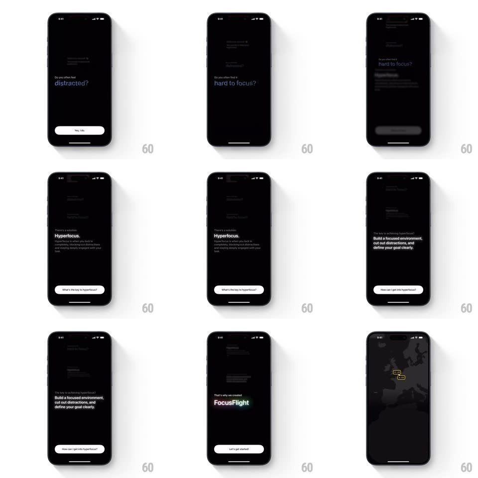

Media
Frame-by-frame

Rebuild this interaction 1:1: FocusFlight's onboarding stack - each answer advances to a new step that slides in front while the previous step scales back, fades, and blurs into a receding stack ("Welcome aboard!", "Do you often feel distracted?", "...hard to focus?", "There's a skill called Hyperfocus.", "Build a focused environment...", "That's why we created FocusFlight", ending on a dark route map).

Rebuild this interaction 1:1: FocusFlight's onboarding stack - each answer advances to a new step that slides in front while the previous step scales back, fades, and blurs into a receding stack ("Welcome aboard!", "Do you often feel distracted?", "...hard to focus?", "There's a skill called Hyperfocus.", "Build a focused environment...", "That's why we created FocusFlight", ending on a dark route map).
## Integration
Integration: stack-agnostic spec - springs given as stiffness/damping, timed motions as duration + curve; map every value to your framework and animation library of choice.
## Scene
Black screens with left-aligned white text, one idea per step, and a bottom pill button per step ("Hi!", "Yes, I do", "What's the key to hyperfocus?", "How can I get into hyperfocus?", "Let's get started"). Behind the active step, up to two previous steps sit scaled down and blurred.
## Motion spec
Pattern: scale-back deck advance, ~500ms.
- Advance: the current step scales to 0.92, fades to 30%, and blurs (8px) moving back (spring ~300/24, 400ms) while the next step rises from 40px below at full scale (same spring).
- Depth: the step two-back scales further (0.85, 10% opacity, 16px blur) and older steps fade out entirely.
- Button: each step's pill fades in +100ms after its text lands.
- Finale: the last step crossfades into the dark map (400ms) with the yellow plane marker pulsing once (scale 1 -> 1.3 -> 1, 400ms).
## Calibration
- Text alignment is identical across steps - only scale/blur/opacity separate the layers.
- No sideways movement: the deck recedes straight back.
## Reduced motion
Steps crossfade (300ms) without scaling or stacking.
## Don't miss
- The receding stack must be visible behind the current step - that depth is the whole effect.
- Buttons are per-step and travel with their card.